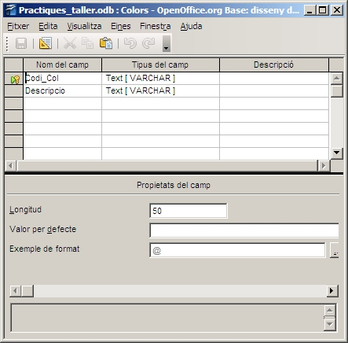

Per tant, mitjançant el disseny d'una taula, aquesta la podem
modificar plenament, tot i que cal tenir en compte que segons la fase
de creació de la base de dades que ens trobem, pot ser perillós canviar
l'estructura interna de la taula per què ens pots ocasionar una errada
en cadena: consultes, formularis i informes es basen en les taules, i
si canviem aquestes, els seus depenents els hi repercutirà de forma
directa.
A la següent imatge és pot veure una finestra de disseny d'una taula amb els elements abans esmentats dins d'ella.

A la imatge anterior es pot veure com no hi ha cap descripció als camps.
Mentre que en aquesta segona podem apreciar que s'han fet canvis
en les descripcions dels camps i també es poden canviar les propietats
dels camps.
En el capítol següent s'avança més en aquesta explicació.

|
|

|
|